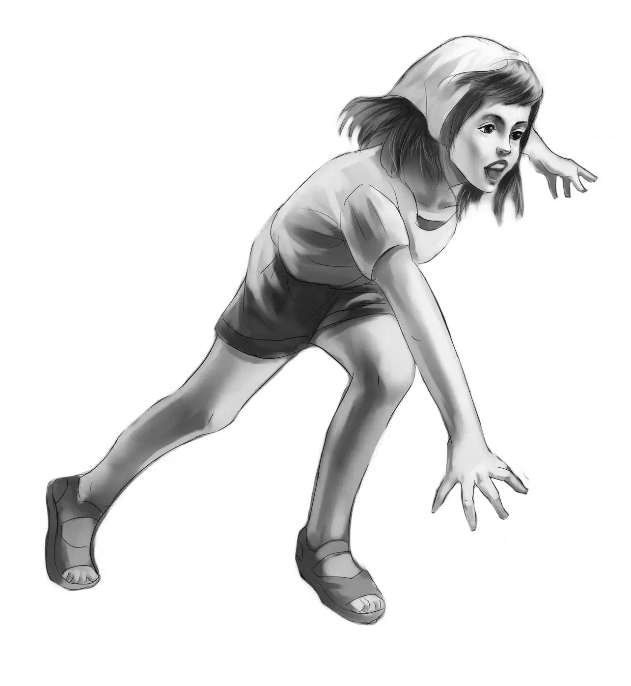
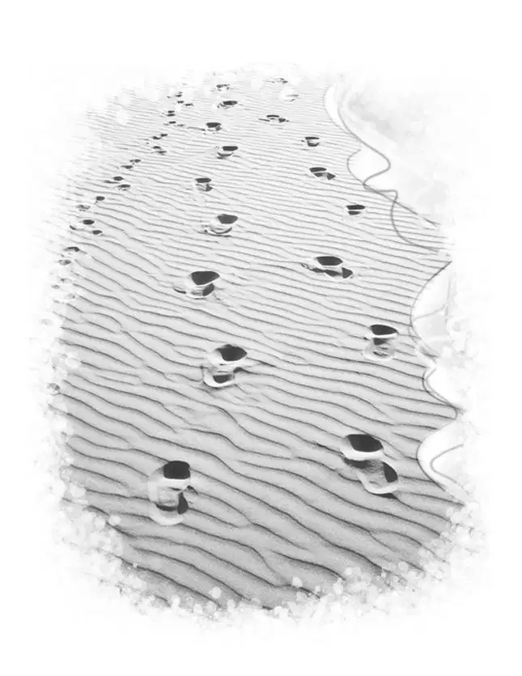
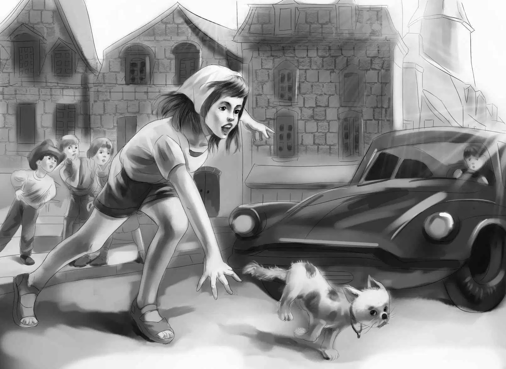
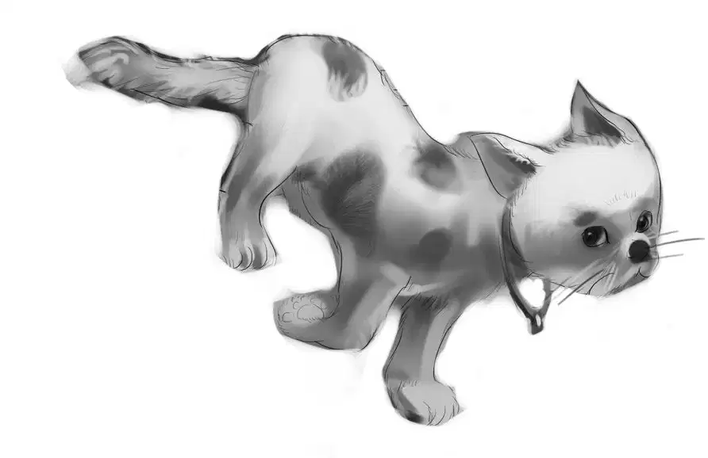

Benny woke very early next morning. He looked out and saw that the weather had changed. It was very windy. The waves were high and the sand was blowing.
Benny pulled on an old pair of pants and a sweatshirt.He wanted to race along the beach, barefoot, and have the whole place to himself.
Without waking Henry or the girls,Benny opened the door and slipped outside.
The very first thing, he stubbed his toe on a stone.
“Ow!” he exclaimed. “That stone wasn’t there last night. Now who in the world would put a stone right in my way?”
Then suddenly he saw a piece of white paper blowing away. He raced after the paper.
The wind blew it high, then low. At last it dropped on the sand.
“Got you!” said Benny. He put his foot on it, until he could pick it up. “That stone I stepped on was holding you down.”
Benny soon saw that the paper was a sheet of writing paper, folded in half. On the outside something was written in old-fashioned writing. Benny could hardly read it in the dim light, but at last he made out the words, “Thank you.” Then he opened the paper and looked inside. He read the message twice.It did not seem to make any sense. It said, “All thanks you. We all thank you.”
That was it. Benny turned the paper over. He folded it again. “Who wrote this?” he thought. “And it must be for us, right in front of our trailer. That sentence, ‘All thanks you,’ isn’t even good English.”
He started back to the trailer house. Now he looked around to see if anyone was in sight. The beach was empty from one end to the other.
“Perhaps there are footprints,” Benny thought.
But all he found were his own barefoot tracks he had just made chasing the paper.

Near the door Benny found what he was looking for. There were three small footprints on the hard sand. “They look like a child’s shoes,” he thought.
Two footprints pointed toward the trailer, and one was made as the person turned to go toward the water. But that was all. Everything else was washed away by the tide. There was nothing to show where the nighttime visitor had come from or gone.
But Benny still had the note. He read it again. Then he opened the door of the trailer and found Henry and the girls just waking up.
“Look!” Benny called. “A new mystery!”
Everyone took turns looking at the note, reading it, and then looking out at the beach.
At last Jessie said, “Well, I don’t know what to make of this.”
“We can show it to Mr. Lee,” Benny said.
“If he’s out on a windy morning like this,” Henry said. “The weather has changed.”
“Let’s have breakfast inside,” Jessie suggested.“Ben, you sit where you can watch for Mr. Lee.”
But although everyone watched, Mr. Lee and Richard did not come down the beach. There was not a sign of them. Jessie let the hot water for the tea grow cold. Everyone felt a bit sad and uneasy.
Benny still thought about the note.“‘All thanks you,’” he said. “That bothers me.”
Henry said, “Let me see that note again. The writing is hard to read. Do you think it really says ‘all’?”
“I don’t know what else it could say,” Benny answered. “I would really like to know what it means.”
“We all would,” Jessie said. “But I give up. I don’t think we’ll ever know what the message means or who was supposed to read it.”
Benny folded the paper and put it in his pocket. “Let’s go to town,” he said. “It’s too stormy to go swimming. There isn’t much to do here.”
Nobody else really wanted to say this, but they were restless not doing anything.
“Something may come up,” Benny said. “But it is more likely to come up in Beachwood than out here.”
“We’ll just wait until after lunch, Benny,” said Jessie. “Then we’ll go up to Beachwood.”
After the lunch dishes were done,they all changed their clothes and climbed into Henry’s car.
They were soon on Main Street in Beachwood, but Henry had a hard time parking the car.
“I forgot this was shopping day,” said Henry, looking everywhere for a parking place. “I guess the windy weather made everybody decide to come to town.”
At last, far down the Main Street, almost at the very end, Henry found room to park. In fact, there was space for two or three cars along the curb.
“One place is all I need,” Henry said, laughing. He put a coin in the meter.
“Look at the crowd,” Benny exclaimed. “Let’s just walk down the street with the crowd. I didn’t know Beachwood had so many people.”
“It doesn’t, Ben,” Jessie told him. “You’ll notice half this crowd comes in from the beaches. The town people are all pale, and the visitors are tanned.”
“And the town people take their time and drive along slowly,” Benny said. “But look at some of the beach people!”
“That’s right,” Henry agreed. “Those drivers expect you to keep out of their way. If you don’t, too bad!”
The Aldens had worked their way down Main Street as far as the drugstore. The street was thick with cars, and people were looking for parking places and honking their horns. What a racket!
Henry and Benny, with Jessie between them, walked along quickly. But Violet stopped to look in a window.
Suddenly Violet cried out, “Oh, look! Look at that cat!”
And before Henry or anyone else could stop her, she ran out into the street. She threw her left hand high in the air to stop the cars coming toward her. There was a noise of grinding gears, and all the cars stopped with a jerk.
Paying no attention, Violet bent over and picked up an enormous gray cat. He was crouching in the dust of the street, and trembling all over.
With the cat safe in her arms, Violet ran back to the sidewalk.
“Did you see that?” a man asked his wife. “That girl risked her life for a cat. She could have been killed!”
Jessie and Henry took Violet between them and led her through the crowd. Violet had the big cat safe in her arms, and indeed the cat did not try to get away.
The drugstore clerk had come to the door of his store. He watched as the postman spoke to Violet.
The postman said, “That’s Miss Smith’s cat. She lives in Tower House. But I don’t think she’ll let you in.”
“She’ll let you in this time—when she sees you coming with her cat,” said the clerk.
People turned to look and smile at Violet. She was a pretty picture in her lavender shorts, a lavender scarf over her hair. And against the lavender was the great gray cat, with long soft fur and beautiful big eyes.
The cat lay still in Violet’s arms, although she could feel its heart beating fast. He seemed to know that he was safe from all the noise.
The Aldens walked across to the Tower House, and this time Benny rapped. He did not have to rap again, for the door opened at once. There stood a new Mary Smith. She was very much upset and frightened.
“Oh, come in! Bring the cat in. I let him out! I am to blame,” Miss Smith said all in one breath. “To think he could have been run over in the street!”
The cat seemed to be comfortable in Violet’s arms. It did not move or try to get down.
When Miss Smith told Violet and Benny to go into the house, they did so. They looked quickly around the room. They both noticed a long black velvet curtain which hung from the ceiling to the floor at the end of the room. But they were amazed at Miss Smith. She was shaking, really shaking.

Violet said, “You’d feel better if you made a cup of hot tea. Why don’t you get one? We’ll be careful when we go out and not let your cat out again.”
Miss Smith actually smiled at Violet. “Oh, I believe I will,” she said. “That cat is Ali Baba the Third, and to think I nearly lost him! You stay just a minute. I don’t want any tea.”
Miss Smith went through the black curtain at the end of the room. She was careful not to let any light shine into the room beyond.
Violet looked about and noticed that the furniture was old and fine and the carpet was an oriental one. She still held the big cat.
Jessie and Henry had been a few steps behind Benny and Violet. When Miss Smith had asked them to come in, she had been too excited to notice Henry and Jessie. They were left out, on the other side of the door.
“We sure were left out in the cold,” Henry said. “I wish we knew what was going on inside the Tower House.”
“I thought Violet and Benny would be right out,” Jessie said. “But I am sure they are all right.”
“We’ll wait, then try knocking,” Henry decided.
Inside the house, Miss Smith soon came back to her guests. She was still upset. “I let him out!” she repeated. “I just opened the door a crack and out he went, flying. I let him out.”
Benny and Violet could not understand this. But they were not going to leave Miss Smith until she felt better. Nobody could be less like a witch than Miss Smith!

“I love cats,”said Violet. “And so does Benny.”
“I see you do.I never saw that cat go to anybody, not even me. You must have a way with you. Do you have a cat?”
“No, we have a dog,” replied Violet, smiling.
Benny said,“I can just see Watch if we brought home a cat. He’s a dog that doesn’t like cats.”
“Most dogs don’t,” said Miss Smith, still trembling.
If Violet and Benny had known it, Miss Smith had talked more in the last five minutes than she did in most weeks. She couldn’t seem to stop saying, “I am to blame. I’m the one who let him out.”
Violet still held the cat. She said, “Don’t blame yourself so much. Look, here is the cat, safe in the house. And he’s beginning to purr. Nobody else, surely, is blaming you.”
But Miss Smith certainly acted as if someone else was blaming her. She stared at the cat and said, “I never saw Ali Baba friendly with anyone before. He’s a very wild cat.”
Benny said,“He knows Violet loves him. Animals know when anyone really likes them.”
It was odd that neither Benny nor Violet thought once of the locket and the picture of the cat in it. But they were too busy thinking of Miss Smith and her troubles. Then, out of the corner of his eye, Benny saw the black curtain move.
“That is no cat,” Benny thought. “I’m sure there are two people here, just as I thought.”
Violet had the same idea. Miss Smith disappeared behind the curtain again for a minute. When she came back, she said, “Would you do something for me, little girl?”
Violet did not feel that she was a little girl, but she said, “Of course. I hope it is something I can do.”
“What can Miss Smith want?” Benny wondered.
“Come back tomorrow morning when the sun is just right. About ten o’clock. Can you do that? Will you? And wear the same clothes.”
Violet was too surprised to speak, so Benny said, “Yes, she can.”
Miss Smith seemed better now, and Violet put the cat down. “I’ll see you tomorrow at ten,” she said. “Good-bye.”
The minute Violet and Benny joined Jessie and Henry they began to tell them all that had happened.
“Miss Smith said I was to come when the light was right,” Violet said. “I can’t guess what she means.”
Benny had a fine idea. “I think Miss Smith wants to paint a picture of Violet with the cat in her arms.”
They all agreed. Jessie said,“Violet was certainly a picture with all that gray and violet color.”
“What a story we’ll have for Mr. Lee,” Benny said. “I’m sure he thought we’d never get inside the Tower House.”
In all the excitement, Benny and Violet forgot about the cat’s name. After all, a great deal had happened in a short time.
The next morning Mr. Lee was surprised at all the news. He thought exactly as the Aldens did. When they told him of Miss Smith’s request, he agreed that probably Violet was going to sit for her picture with the cat in her arms.“Otherwise,” remarked Mr. Lee, “she wouldn’t have told Violet what color to wear.”
At exactly ten o’clock Henry stopped the blue car in front of the Tower House and Violet got out. Miss Smith opened the door before she had time to knock.
“Go in, please,” Miss Smith said. She pushed back the black curtain.
Violet found herself in an artist’s studio. Sunshine came in through the large back window, and there was light everywhere. And sure enough, there was another person! She came out of the shadows.
She was a tiny little woman, dressed in a smock, all covered with paint. She looked sharply at Violet.
“Sit here,” she said suddenly. “Good of you to come. Take up Ali Baba.”
Now Violet never picked up a cat. She always waited for the cat to come to her. She explained this now as she saw the cat lying asleep on a silk cushion.She did not wait long.Ali stretched himself and jumped lightly into her lap.
“A marvel,”said the artist. She wasted no time but began to draw very quickly on the paper on the easel.
You don’t have to sit still,” she said gruffly. “Don’t look at Ali. Look at me.”
Violet obeyed. The cat settled down in her arms exactly as he had done the day before. He felt safe.
“How will you get home, child?”asked the little woman.
“Oh, my brother Henry is waiting with the car. They are all waiting.”
“Who is ‘all’?”
“Well, my sister Jessie, Henry, my big brother, and Benny, my younger brother. There are four of us.”
“Four of you?”said the little woman.“Yes, that’s right. A loving family, eh?”
“Oh, yes.”
“I never saw one myself,” said the artist.
You should meet mine,”Violet exclaimed. How sad it must be, Violet thought, to live all one’s life and never know a loving family.
Ali had gone to sleep.His head was lying sideways, and he had stopped purring.
Suddenly Violet asked,“Do you have other cats?”
“Oh, yes. I have ten cats. I like cats better than people, you see. I try not to have anything to do with people.”
Violet thought about that. Here was someone who did not want to make friends. If Ali had not escaped from the house, Violet would never have been invited to come in.
Without even having begun to paint, the artist said, “That’s all. Come tomorrow, child.” And she handed Violet a note that said, “Please be ready for me at 10. Thank you.”
“I will be,” Violet said. She started to put Ali Baba back on the cushion, talking to him all the time. He growled softly. He was very comfortable and did not want to be moved.
“I’ll be back tomorrow to hold you,”Violet promised.She did not even try to look at the picture. She knew it was not done and she would have to wait.
The artist called, “Mary, please let this little girl out. We are finished for today.” And to Violet she said with great charm, “Thank you, my dear, for coming.”
“Just a minute, Ruth,” Violet heard Miss Smith answer. And in a moment she appeared and led Violet to the door.
You’ve made Miss Lane and me happy,” Miss Smith said quickly. Her cheeks were pink as she spoke, and suddenly Violet knew that this was a very shy person. How wrong everyone in Beachwood was about Miss Mary Smith!